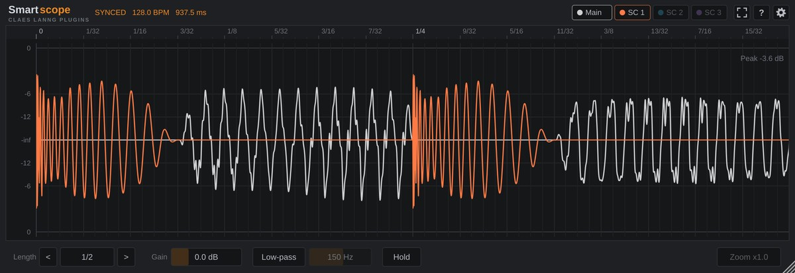

Kick and 808 phase
When a kick and an 808 play the same low note a little out of time, their waves can push in opposite directions and cancel out. The worst point is half a cycle apart: 10.8 ms for an 808 on F#1.
Try it
Two sine waves on the same note: the kick's low tone and the 808. Slide the 808 later and watch the black line, which is what you actually hear.
Kick 808 Both together
Headphones or a subwoofer help: laptop and phone speakers can't play these notes. The sound is quiet and stops after three seconds.
Why it happens
A low note is a slow wave. An 808 on F#1 swings up and down 46 times a second, so one cycle takes 21.6 ms. If the kick's tone is on the same note and starts half a cycle later, its wave goes down exactly when the 808's goes up. Added together, they cancel.
Lower notes have longer cycles, so they can be further apart before they cancel: 12.1 ms for E1, 8.1 ms for B1. The 808 note chart lists the cycle for every note.
Delay and polarity aren't the same
Flipping polarity turns the whole wave upside down, so it cancels every frequency at once when both sounds are lined up. A delay only cancels the notes it happens to put half a cycle apart. That's why flipping polarity can save a kick and 808 that are slightly late, or ruin a pair that was already fine. Try both in the demo.
A real kick is harder
A kick isn't a steady note: it starts high and drops to its pitch within its first few dozen milliseconds. So a kick and an 808 can add up in one moment and cancel in the next. You can't hear that clearly on its own, and you can't work it out with a calculator. You have to look at the two waves together.
How to fix it
Look first, then pick the fix that suits the track.
- Nudge the 808
- Move the 808 a few milliseconds earlier or later until the waves swing the same way where they overlap.
- Flip the polarity
- Most DAWs have a polarity or phase switch on the mixer channel. If the low end gets bigger, keep it. If it gets thinner, switch it back.
- Tune the kick to the 808
- A kick that settles on the 808's note, or a fifth away, blends instead of beating against it. See the note pages, like F#1.
- Let them take turns
- Sidechain the 808 to duck under the kick, or start the 808 a little after the kick's tone, so they don't overlap at all.
See it on your own track
Smartscope shows your kick and 808 as two layers, locked to your project's tempo so the picture stands still while the loop plays. Zoom in to single samples to line them up to the millisecond. It's free, for Windows.
